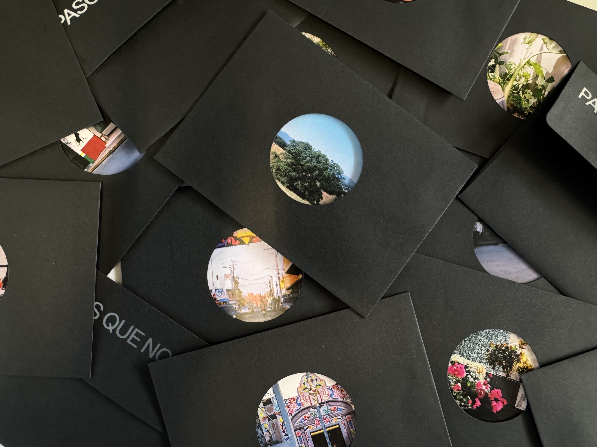

INMERSIÓN
Experiencia inmersiva usando un proyector análogo de diapositivas y uno digital con una interacción creada en mediapipe.
TIPOGRAFÍA
Creamos una tipógrafía con cortes muy rectos, simulando la arquitectura de la calle y como ser mujer en México se siente como estar atrapado en una caja.

EDITORIAL
Se hicieron unas postales, con las fotos que las mujeres tomaron con una cámara desechable y se metieron en unos sobres negros, intervenidos con un suaje que revela una parte de la foto, para seguir con la identidad visual del proyecto.

BRANDING
Creamos el sistema visual, centrandonos en los círculos, que simula una ventana o una linterna que revela sus pasos.